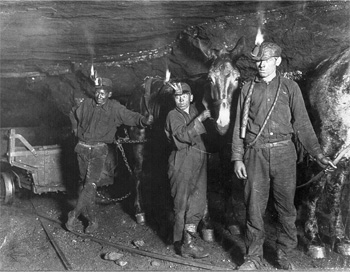

Articulo original (En Inglés): Jason Pargin, 22 Mayo 2017 cracked.com
Traducción y redacción al Español: Jonatan Ardón
Claro que no sabes qué quieres hacer con tu vida.
Sería raro que lo supieras. Si te sientes ansioso por esto, es solo porque has creído una mentira particularmente tonta y cruel que nos cuentan los adultos: que existe una manera de hacer las cosas en la vida humana y que, a los veinte años, ya deberías saber "qué quieres hacer". Si a los treinta aún no lo sabes, significa que no te importa o que no te estás esforzando lo suficiente.
Bueno, estoy aquí para decirte que no es culpa tuya. Y puedo demostrarlo.
6 | Nadie sabe realmente qué quiere ser cuando sea grande.
Probablemente fuiste a la escuela con personas desagradables que, desde sus primeros años universitarios, se habían centrado en una gran carrera profesional. Sabían que querían ser médicos, ingenieros o lo que fuera a los 19 años, y a los 29 lo pudieron conseguir. ¡Hurra por ellos! Estoy deseando ver las fotos de sus vacaciones en Instagram y que me adelanten en el tráfico con su BMW Serie 5. Aquí está la parte que todo el mundo omite:
Estaban mintiendo. No sabían lo que querían. El adolescente que aspira a ser abogado sabe tanto sobre lo que implica ese trabajo como un cocodrilo promedio sabe sobre robar un casino. Aspiran a ese trabajo basándose en una fantasía construida a partir de rumores y de lo que ven en Hollywood. Quizás, por casualidad, ese trabajo les quede como anillo al dedo, pero nunca "supieron" que querían hacerlo.
Minerva Studio/iStock
Créeme, puedes trabajar durante años en algo antes de "saber" cómo es realmente: el desgaste mental y emocional diario, las perspectivas a largo plazo, las partes desagradables que no aparecen en el folleto. E incluso entonces, ser abogado en un bufete de Nueva York es radicalmente diferente a serlo en Villa Nueva, en el juzgado de paz, y en ambos casos el trabajo será radicalmente diferente en 2037.
Si realmente no sabes lo que quieres ser, no es culpa tuya. En realidad, la única diferencia entre tú y los que "nacieron ganadores" es que tú eres consciente de que no sabes lo que quieres hacer. Algunos de esos "ganadores" simplemente lo resentirán en el futuro y sentirán como una angustia que les carcomerá en la mediana edad y que solo calmarán con cocaína y sexo ilícito.
KatarzynaBialasiewicz/iStock
5 | Durante la mayor parte de la historia de la humanidad, los trabajos no existían.
Los niños nunca entienden el contexto. Desde que naces, tu no comprendes cómo son las cosas, ni mucho menos cómo llegaron a ser como son (en realidad, el adulto promedio tampoco lo entiende). Bueno, déjame explicarte el contexto que hace que «¿Qué quieres ser cuando seas grande?» sea una pregunta tan estúpida.
Hasta hace muy poco en la historia de la humanidad, solo existía un trabajo: sobrevivir. ¿Tienes hambre? Consigue comida. ¿Estás cansado? Duerme. ¿Estás en peligro? Corre o lucha. El futuro no existía: las preocupaciones del presente ocupaban toda nuestra capacidad cerebral. Si esto te parece hermoso y natural, ten en cuenta que solo el 25% de los seres humanos superaba los 40 años de edad y que la mayoría de las muertes se debían a violencia brutal o accidentes horribles: si pisabas un hoyo y te rompías el tobillo, te quedabas allí tirado en la nieve hasta que llegaba un lobo y empezaba a devorar tus genitales.
hkuchera/iStock
Al darse cuenta de que vivir asi era un asco, los humanos empezaron a formar tribus cada vez más grandes, lo que nos permitió cuidarnos unos a otros. Pronto, el número de "trabajos" que una persona podía realizar empezó a crecer. Una aldea necesitaba a alguien que se dedicara exclusivamente a tejer cestas, a administrar medicinas o a gritar en el campo para ahuyentar a los cuervos. Aun así, probablemente no había muchas opciones de cosas que hacer y a la mayoria le decian: "Deja de estorbar, mejor ve a recoger leña con el otro inútil ".
Luego formamos ciudades y naciones, momento en el que surgieron cientos de posibles opciones profesionales, pero incluso entonces, normalmente la gente ya nacia en una familia dedicada a algo en especifico. Por eso muchos de nuestros apellidos son nombres de oficios familiares (Herrera, Zapata, Cojoncio). La vida seguía siendo horrible en muchos aspectos, pero era raro que a alguien le preguntaran "¿qué quieres hacer cuando seas grande?"". Forjabas el metal, te casabas, tenías hijos y morías. Eso era lo habitual hasta los años cincuenta y sesenta: trabajabas en la granja familiar o ayudabas a tu papá en el taller mecánico. Si no era así, tampoco te alejabas mucho: si crecías en un pueblo minero, probablemente te dedicabas a la minería del carbón.
Lewis Wickes Hine
Hace poco que empezamos a decirles a los niños: "Puedes ser lo que quieras ser". Hoy en día, cualquiera puede ir a la universidad y/o mudarse para perseguir sus sueños. Eso es fantástico, pero también ocurre en una sociedad tan compleja que ahora mismo puedes buscar una lista de 12,000 profesiones y aun asi no encontrarias ni la cuarta parte de todas las opciones que hay (¿Dónde estudio para ser tiktoker?) Ahora multiplica eso por todas las variaciones que hay dentro de esa carrera (como el ejemplo de un abogado, puede ser penalista, tener otra especialidad, etc.), y luego añade todos los trabajos que aún no existen pero que pronto existirán (cuando yo era adolescente no existía la inteligencia artificial, y quizá algún día te sorprenda descubrir que se contratan exterminadores de androides mutantes). Ahora tienes una lista de cientos de miles de opciones, sin posibilidad de saber de antemano cuál es la adecuada para ti.
Esto tampoco es culpa tuya.
4 | Te ves obligado a tomar una decisión potencialmente fatal sin tener información.
Así que tú, joven, te encuentras ante una fila de cientos de miles de puertas. Se extiende por kilómetros, desapareciendo en el horizonte en ambas direcciones. Sabes que detrás de algunas hay oro, detrás de otras un lobo que se lanzará sobre tus genitales. Quieres abrir algunas puertas para ver que hay detrás, solo que para abrir la puerta, en lugar de una cerradura, cada puerta tiene un gran barril conectado que debes llenar con tu propia sangre y sudor por años... y eso lo tienes que hacer solo para saber que hay detrás de la puerta.
BrianAJackson/iStock
Diablos, incluso el ejemplo anterior es quedarse corto. Descubrir que elegiste la carrera equivocada puede costarte una deuda de por vida, relaciones arruinadas sin fin y tu prime físico. Empezar de nuevo y elegir otra puerta requiere mucho valor, quizá más del que tienes en tus venas. Puede que te encuentres incapaz de asumir la deuda adicional de la educación o de mudarte al lugar donde está el nuevo trabajo. Puede que te veas limitado por las obligaciones familiares (está bien compartir casa con tres amigos en un trastero cuando tienes 22 años y estás intentando montar un negocio, pero no tanto cuando tienes 40 y tres hijos).
Nadie te lo dice de antemano. Nos aseguramos de decirles a los niños que pueden ser lo que quieran (¡lo cual es genial!), pero siempre omitimos el hecho de que prácticamente no existe ningún sistema para reducir las opciones. En cambio, lo que tenemos es la universidad, donde pagarás el precio de una mansión por una educación que comienza exigiéndote que ya sepas lo que quieres hacer. En otras palabras...
3 | El mercado laboral es un sistema ridículamente defectuoso.
Imagina una máquina gigante llamada sociedad, que chisporrotea y echa humo porque le faltan muchos engranajes (personas o fuerza laboral). Ahora imagina una colina que se cierne sobre ella, y desde esa colina caen millones de engranajes sueltos que han sido descuidadamente arrojados desde una caja. Estos rebotan alrededor de la máquina hasta que algunos de ellos aterrizan en los huecos y comienzan a girar junto con el resto (O sea que estas personas encuentran su “hueco” en la sociedad: un buen trabajo, una oportunidad, un lugar donde encajan y pueden participar en el sistema.). Muchos otros ruedan y caen al suelo, condenados a oxidarse bajo la lluvia (Es decir, son ignorados, excluidos o terminan en situaciones difíciles). Así es como funciona el sistema en este momento. A veces es cruel y/o inconcebiblemente estúpido.
tolokonov/iStock
No es culpa tuya. Tú no diseñaste el sistema. Nadie lo hizo. Todos están improvisando sobre la marcha. Esto, por cierto, es lo que tiene tan enojados a todos en el mundo occidental en estos días. Siempre se manifiesta como enojo por "la economía", "la subcontratación" o "la inmigración", pero lo que realmente ha sucedido es un fracaso estrepitoso a la hora de conectar a las personas con los empleos. Por un lado, tenemos un río de desempleados ansiosos y, por otro, un desierto árido de industrias que piden a gritos trabajadores. Si la última parte de la metáfora te confunde, es porque te han contado la ridícula mentira de que "no hay trabajo". Pregunta a cualquier gerente o responsable de recursos humanos y te dirán que no encuentran buenos empleados. Ni siquiera esperarán a que les preguntes: basta con acercarte lo suficiente para oírles hablar de cómo los jóvenes de hoy en día carecen de habilidades y ética de trabajo, y todas esas tonterías.
Si tan solo supieran que la ingeniera perfecta que están buscando trabaja actualmente en un Subway en la parte mas marginal de ciudad Peronia y que nunca recibió formación para ser ingeniera. Fue a la universidad para ser veterinaria porque le encantan los animales, se dio cuenta de su error con las manos metidas hasta los codos en las tripas de las vacas, y luego tuvo que abandonar los estudios y buscar un trabajo para ayudar a pagar las facturas cuando le cortaron el subsidio por discapacidad a su mamá. Rápidamente se dio cuenta de que la sociedad no le ofrecería prácticamente ninguna ayuda para conseguir el trabajo en el que pudiera ser más útil para sí misma y para la sociedad. Aunque su motivación es dejar de depender de los cupones de alimentos y convertirse en una ciudadana más productiva, lo único que obtiene de la gente es la típica respuesta en forma de burla sarcástica y discursos sobre el esfuerzo personal: "Dices que no puedes pagar la universidad, ¡pero veo que tienes un TELÉFONO!"".
oatawa/iStock
De hecho, descubrirá que la sociedad la frena activamente a cada paso. Quizás de milagro entre en una escuela de ingeniería, solo para descubrir que ese campo está compuesto por un 87 % de hombres, y que estos tienden a tratar a las mujeres como basura. Ah, sí, esa es la otra cosa: algunas de las piezas de nuestra proverbial máquina no quieren más piezas a su alrededor. No importa que todo funcione mejor con más piezas (o sea que las personas con trabajo mejoran la vida de todos) a nivel individual ellos no quieren competencia.
Por eso se produce esa extraña paradoja en la que esos desempleados amargados, los típicos votantes de Trump a los que los medios de comunicación entrevistan a diario, parecen plantear una serie de exigencias incompatibles:
"¡Tenemos demasiados extranjeros perezosos que vienen aquí y se aprovechan de nuestro sistema de bienestar!"
¿Entonces quieres que consigan un trabajo?
"¿Y que se roben nuestros trabajos? ¡No!"
¿Entonces quieres que se queden en sus países de origen y desarrollen sus propias economías?
"¿Con China y Japón ya quitándonos el pan de la boca? ¡Lo último que necesitamos es otra potencia económica inundando el mundo con sus exportaciones!"
¿Entonces quieres que se queden en casa y sigan en la pobreza?
"¡No, tonto! ¡Eso es lo que los hace venir aquí en primer lugar!"
tuulimaa/iStock
No saben lo que quieren, porque no están enojados por lo que realmente deberían estarlo. Necesitan trabajo, y hay mucho trabajo por hacer; simplemente no hay un conducto que conecte a ambos. No es culpa suya. Nuestro sistema utiliza el talento humano con tanta eficiencia como un perro come mantequilla de maní.
2 | Fuiste creado para otra época
Ojalá pudiera darte a alguien a quien culpar: Wall Street, los políticos. Esas personas son malas gestionando el problema, parecen pensar que es más barato renunciar a los humanos que enseñarles, pero ellos no lo crearon. Este sistema te parece un asco porque no fuiste creado para vivir en él.
Nuestra cultura cambia mucho más rápido de lo que los humanos pueden evolucionar para seguirle el ritmo. Por ejemplo, tu cerebro no está preparado para manejar la sobrecarga de información de Internet. ¿Cómo podría estarlo? Se necesitarían cientos de generaciones seleccionando sexualmente solo a aquellos que son... buenos con Internet, supongo. Tu cerebro tampoco evolucionó para mantener las apariencias ante 4000 seguidores de Instagram o para planificar tu maldita vida con 40 años de antelación. Durante la mayor parte de la historia de la humanidad, incluso llegar a la vejez era una fantasía. Y seguro que no evolucionaste para aprender completamente un nuevo conjunto de habilidades cada cinco años.
Charles R. Knight
Eso no es tu culpa.
Si miras a tu alrededor, verás que el mundo está lleno de personas que intentan seguir sus instintos naturales y se topan con las reglas de la sociedad, como una mosca asustada que intenta escapar por una ventana cerrada. Es absurdo preguntarse por qué el mundo está lleno de delincuentes violentos. Durante la mayor parte de la historia, la violencia no era un delito, sino la forma de conseguir las mejores parejas y perpetuar tu línea genética. Es ridículo preguntarse por qué hay tanta gente perezosa cuando parece que los cazadores-recolectores solo trabajaban 15 horas a la semana. Es cruel burlarse de alguien por no tener un gran círculo de amigos cuando es muy probable que descienda de nómadas que, en su mayoría, solo hablaban con sus familias.
No eres raro. Eres la cúspide de la evolución, una maravilla de la naturaleza, parte de una especie tan increíblemente adaptable que ya estaríamos viviendo en la Luna si la luna no hubiera resultado ser tan aburrida. Es el mundo el que se ha vuelto raro.
Crisalx0/Pixabay
1 | El tiempo no se desperdicia si se dedica a hacer cosas.
Las mejores cosas y las peores cosas suelen ser las mismas. Por ejemplo, la libertad.
¿Recuerdas cómo todo el mundo fantaseaba con los autos voladores? Solía ser un eslogan («Estamos en 1995, ¿dónde están los autos voladores, maldita sea?»). Bueno, imagina que te subes a un auto para ir al trabajo por la mañana y de repente el vehículo se eleva en el aire. Por un momento, sentirías una gran sorpresa. ¡Podrías ir a cualquier parte! ¡Todas esas carreteras congestionadas se pueden ir al carajo! Entonces pisas el acelerador y el coche sale disparado a 600 millas por hora. Antes de que dejes de gritar, te has estrellado contra una montaña, donde tu cuerpo destrozado permanecerá hasta que llegue un lobo y se coma tus genitales.
Volar es genial, el tráfico y los baches son un fastidio, pero necesitas un conjunto completamente nuevo de herramientas para lidiar con esta situación. Eso es la libertad en pocas palabras. La libertad es lo mejor del universo, pero lidiar con ella requiere una enorme cantidad de energía mental. Más de la que la evolución te ha dado. Naciste tras una época en la que el camino de la vida humana solo podía bifurcarse en unas pocas direcciones diferentes, en un mundo en el que, dependiendo de cómo juegues tus cartas, puedes morir congelado en un banco del parque o ganar seis cifras haciendo unboxing de juguetes en redes sociales.
VinokurovYury/iStock
Así que si me preguntas qué habilidades necesitas para sobrevivir en esta maravillosa, idiota y descontrolada sociedad que es como un coche volador, no te hablaré de aprender a programar o dominar el arte de reparar robots (aunque eso tampoco viene mal). En cambio, diría que necesitas aprender el arte de renunciar. Saber cuándo y cómo alejarte, reiniciar, lidiar con la ansiedad de la incertidumbre. De eso se trata realmente: aprender a ignorar los costos irrecuperables de tiempo y esfuerzo y seguir adelante, percibir cuándo te estás estancando, darte cuenta de que la mayoría de los humanos prefieren la comodidad de la miseria al aterrador riesgo del cambio.
En el camino, debes recordar que no existe el tiempo perdido, siempre y cuando lo estés intentando. Ese mal trabajo te enseñó habilidades que sin duda necesitarás en el futuro (gestión del tiempo, paciencia, relaciones interpersonales, organización y, lo más importante, saber qué elementos debes evitar en tu próximo trabajo).
Pixabay/Pexels
Ya mencioné antes que cuando terminé la preparatoria, los sitios web no existían. Obtuve un título en periodismo televisivo, fracasé en ese campo después de menos de dos años, tuve una serie de trabajos de oficina con salario mínimo, intenté volver a la universidad, fracasé, me endeudé profundamente para obtener varias certificaciones en reparación de computadoras, no conseguí trabajo en ese campo y, mientras tanto, dedicaba entre 30 y 40 horas de mi tiempo libre a escribir comedia en Internet sin recibir ningún pago. En los pocos años antes de que Cracked me contratara como editor, me habían rechazado para trabajos en una oficina del Seguro Social y en un almacén de UPS, y me consideraba afortunado de haber ascendido hasta llegar a ser el supervisor de menor rango en el centro de entrada de datos de una compañía de seguros. Tenía una deuda de 15 000 dólares en mi tarjeta de crédito y estaba tratando de averiguar cómo pedir prestado el dinero necesario para obtener una certificación en MS Access.
¿Y sabes qué? En este trabajo ridículo, he terminado usando cada pedacito de esa porquería. La capacidad de investigar y verificar datos (escuela de periodismo), escribir con plazos de entrega (mi breve etapa como productor de televisión local), crear y gestionar hojas de cálculo (de trabajar en la facturación de un bufete de abogados), dar opiniones claras sobre el control de calidad (mis años trabajando en control de calidad en una oficina de seguros) y adaptarme a un sector que cambia abruptamente cada seis meses (una década entera de costosos, frustrantes y desalentadores reinicios profesionales).
hkuchera/iStock
Por lo que sé, eso es todo lo que puedes hacer: seguir intentándolo, seguir aprendiendo de tus errores, seguir escuchando a otras personas para aprender de los suyos. Pero, a pesar de todo, date cuenta de que esta incertidumbre es normal, producto de un sistema aleatorio e injusto que nadie habría diseñado a propósito. La ansiedad es un efecto secundario que tienes que controlar, no va a desaparecer. Y, lo más importante de todo, date cuenta de que no estás perdido en el bosque esperando a que comience tu vida. Esta es tu vida, y algunas de las cosas que odias ahora son las mismas que extrañarás más adelante.
Pero no dejes que este sistema sin sentido, ni las personas que tienen la suerte de sentirse cómodas en él, te hagan odiarte a ti mismo. Te dejo un video de un perro pidiendole comida a su dueño.
TikTok - Make your day. (n.d.). https://vm.tiktok.com/ZMAoRFD7N/